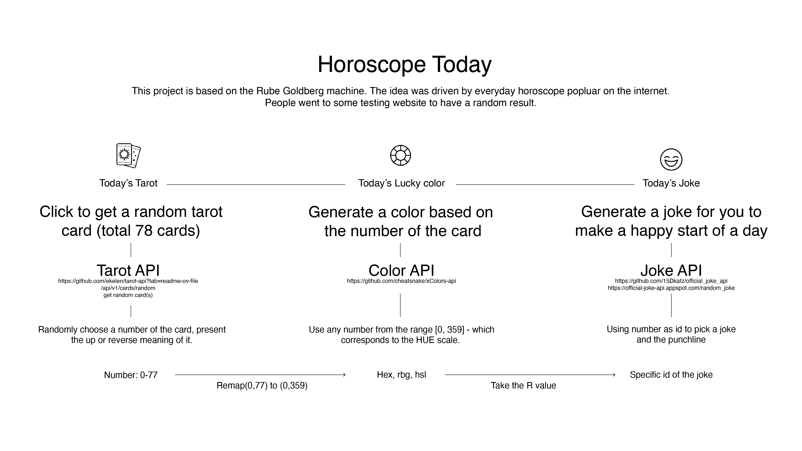
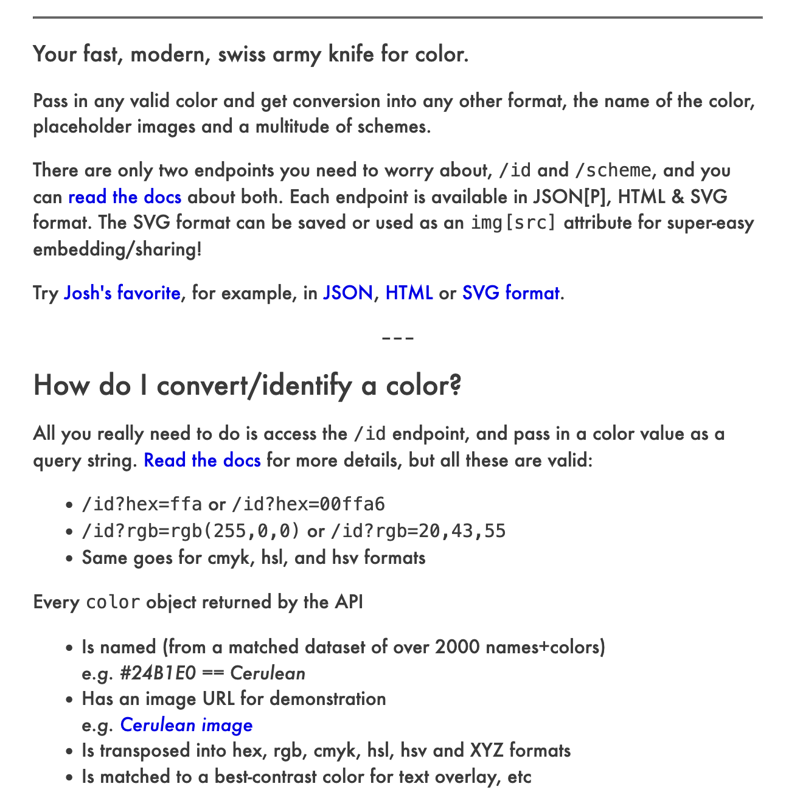
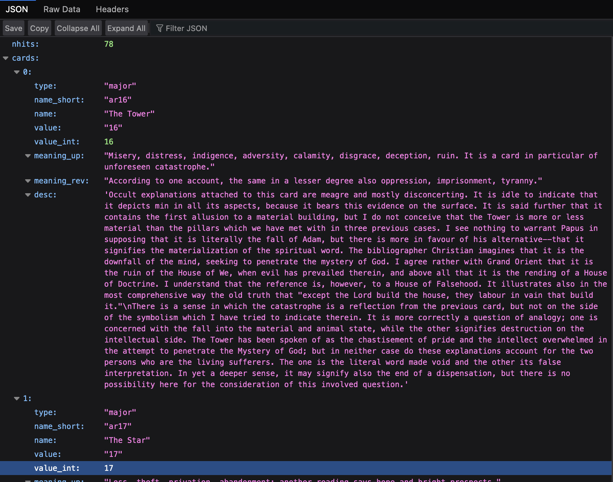

Specific card and the meaning I want to display.
So I just tried to use it and see if it works. Since the color form by RGB, so I let all RGB value equal to tarot number.
const generateColorRGB = (tarotNumber) => {
// Use tarot card number to generate RGB value
const r = tarotNumber;
const g = tarotNumber;
const b = tarotNumber;
return `${r},${g},${b}`;
Transfer tarot number to Color ID.
Remapping data
const fetchColorData = (tarotNumber) => {
tarotNumber = Math.round(map_range(tarotNumber, 0 , 40, 0, 359));
console.log(tarotNumber)
const colorURL = `${colorAPIURL}${tarotNumber}?format=${colorFormat}`;
return fetch(colorURL)
.then((response) => response.json())
.catch((error) => console.error('Error fetching color data:', error));
}
function map_range(value, low1, high1, low2, high2) {
return low2 + (high2 - low2) * (value - low1) / (high1 - low1);
Wrong format
if (/^[A-Z]$/.test(letter)) {
// If the first letter is a letter, just use the letter
mealListURL = `https://www.themealdb.com/api/json/v1/1/search.php?f=${letter}`;
} else if (/^[0]$/.test(letter)) {
// If the first number is 0, go to a...
mealListURL = `https://www.themealdb.com/api/json/v1/1/search.php?f=a`;
} else {
// If there is no letter or an invalid letter, randomly pick one
const randomLetter = String.fromCharCode(65 + Math.floor(Math.random() * 26));
mealListURL = `https://www.themealdb.com/api/json/v1/1/search.php?f=${randomLetter}`;
For the coding part, I extract the rgb’s R data out of the color data, and use it as an id to fetch a joke.
const rValue = data.rgb.split(',')[0].slice(4); // Extract r value from RGB
fetchJokeData(rValue)
.then((jokeData) => appendJokeData(jokeData))
.catch((error) => console.error('Error fetching joke data:', error));
Changing website background
const colorDisplay = document.createElement('div');
document.body.style.backgroundColor = data.rgb;
Documentation
Connect Tarot API
Connect Tarot API with Color API
Connect Color API with Meal API
Connect Color API with Joke API
Start

At the beginning of the project, I used the example in the class to create a chain.
Cocktail -> NASA -> Meal Recipe.
[indexPratice2.html]
Then I started to create my own chain. I want to create a machine that could generate a horoscope for people today. It includes a tarot reading, a lucky color for today, and also a meal recipe for today that brings luck. Due to the technical issue, later the mealapi changed to the joke api.
First, I check a free api that could generate a tarot card for the users.
https://github.com/ekelen/tarot-api?tab=readme-ov-file
Then, I wanted to use the id of tarot to fetch a random color from color api. The original color api I used was https://www.thecolorapi.com/scheme .
Originally I was planning to use meal api , however when I checked the json of the meal api:
https://themealdb.com/api.php
, although it provides the search method of using id, the id is unpredictable and hard to map the color data to it. I tried to use a hex number and translate it to an ASCII number, but it’s too complicated at this moment. The code is working but not in an ideal way.
This one kind of work, but I still want to try more straightforward way.
Then, I found another color api,
https://github.com/cheatsnake/xColors-api
,
https://x-colors.yurace.pro/api/random
, which coded color data in the number id. I can use any number from the range [0, 359] - which corresponds to the HUE scale. In order to get the full hue, I try to remap my card value from[0,77] to [0, 359]. And change the background color of my website according to this.
I try to use the [data.card] value to fetch a color, however, in the documentation or the json view of this api, I couldn’t find any data that uses one number to fetch a color. Although I could use one number to give the rgb, I still want something more straightforward.
[indexT.html]
[indexT.html]
[indexTC.html]
[indexTCM.html]
[indexTCJ.html]
In the JSON file, it showed several data that I could fetch. I decided to have the value of the card, name and meaning_up/meaning_rev of it.
Project 1: A Rube Goldberg machine
Intro
Github Link
Horoscope Today
https://github.com/lukazhuang/CretiveTect4/tree/main/Project1